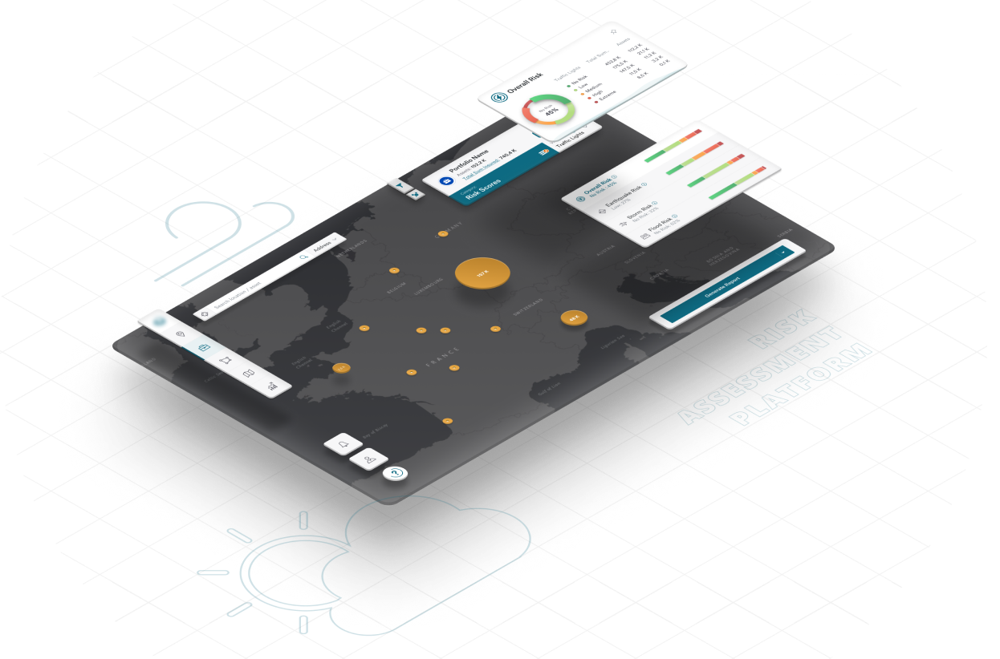
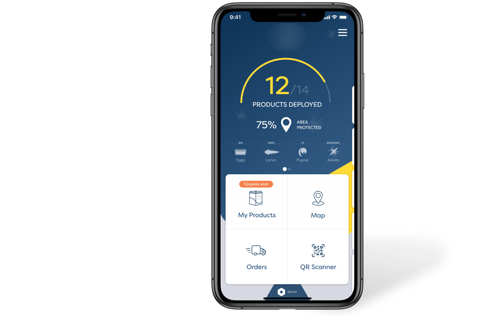
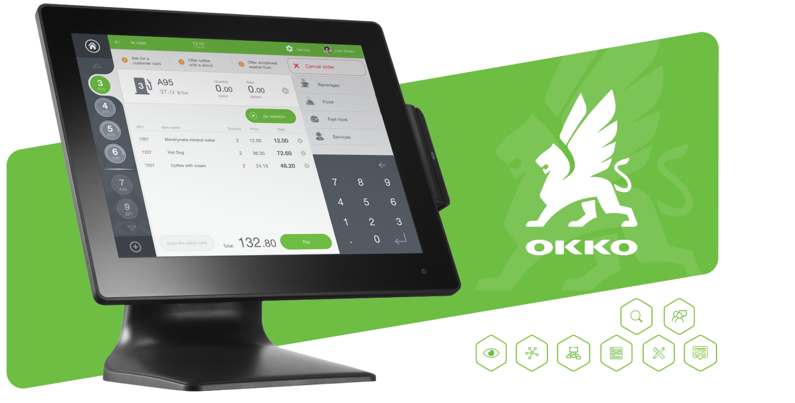

Risk Assessment Platform
Role: Lead UX/Product DesignerWe revolutionized risk assessments for a global reinsurance leader, creating a user-centric platform to evaluate asset risks from natural hazards and climate change over the next century. Our holistic transformation enhanced usability and aligned the platform with evolving user needs.
User Research | Personas | Journey Mapping | User Flows | Information Architecture | Wireframes | Usability testing | Design System creation | UI Design | Interaction Design
Insects Control System
Role: Lead UX/Product Designer----
User Research | Personas | Journey Mapping | User Flows | Information Architecture | Wireframes | Usability testing | Design System creation | UI Design | Interaction Design


POS software redesign
Role: UX ArchitectOur client, one of Ukraine's largest gas station networks, approached us with a critical challenge: to evaluate and redesign their existing point of sales (POS) solution.
User Research | Personas | Journey Mapping | User Flows | Information Architecture | Wireframes | Usability testing | Design System creation | UI Design | Interaction Design